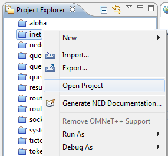

Exploring the Models
1. Make sure project is open.
2. Note the folder structure of the INET Framework project: src contains model components (protocols, apps, etc), and examples contains example simulations.

The OMNeT++ programming examples (aloha, cqn, etc.) are mostly single-folder projects.
3. Common file types you'll encounter:
- .ned
- definitions of simulation components and networks
- .cc, .h
- C++ source files of simulation components
- .msg
- message descriptions (e.g. protocol headers) that are automatically translated to C++ classes
- _m.cc, _m.h
- generated files, created from msg files during the build process
- .ini
- parameter settings and configuration options for simulations
Launching Simulations
1. Select the .ini file (usually omnetpp.ini) or its parent folder.
2. Click Run on the toolbar.
3. If the following dialog comes up, choose OMNeT++ Simulation and click OK.
4. Launch configurations go to the Run button's menu. Select one to run, or Ctrl+Click to open it for editing.
Viewing Simulation Results
1. Simulation results are normally saved in the results folder. You may need to select the project and hit Refresh (F5) to see it.
2. Double-click any (.vec or .sca) file to open the Analysis Tool.
3. The Analysis Tool will let you browse, select, process and plot the results. It will save your analysis into a .anf file in the parent folder.
4. Later on you can just double-click the .anf file to open the analysis again. Having .anf files enables you to call up the same charts with different results after new simulation runs.
Exploring Simulation Interactions on a Sequence Chart
OMNeT++ helps you explore simulation models by letting you visualize interactions on a dynamic sequence chart. The sequence chart works from an event log file (.elog) recorded during simulation execution. Due to the associated overhead, recording has to be turned on explicitly.
1. To turn on eventlog recording, open the launch configuration (see Launching Simulations above), select the option in the dialog, then click Apply.
2. Run the simulation.

3. The event log (.elog) file will be in the results folder, double-click to open it. (You may need to select the project and hit Refresh (F5) to see the file.)
4. Sequence chart will open in the editor area.
Getting More Simulation Models
1. The Help > Install simulation models menu item offers automatic installation of selected simulation models or model frameworks.
Currently only the INET Framework is available via this facility, but with time, the list will be to expanded to include other models as well.
2. For models not directly available, go to the download area of omnetpp.org, which contains a fairly complete list of open-source OMNeT++ simulation models.
These models have to be downloaded and installed and/or imported into the IDE manually (see next item).
Importing Simulation Models into the IDE
If you have downloaded a simulation model or some other project and you want use the IDE to work with it, it needs to be imported into the workspace.
1. Choose File > Import... from the menu.
2. In the dialog, select Generic > Existing project into the workspace.
More Help on Getting Started
1. You can find more introductory material under the Getting Started folder of the OMNeT++ documentation in the IDE help system.
2. The documentation is available in PDF format and outside the IDE as well, see the doc folder of your OMNeT++ installation.
3. Recommended items:
- TicToc Tutorial: Going through this tutorial is the quickest way pick up OMNeT++ modeling concepts and become productive as fast as possible.
- The OMNeT++ Manual explains everything you need to know for writing OMNeT++ simulations in detail. A must-read if you are serious about working with OMNeT++.
- The IDE User Guide methodically describes the features of the Simulation IDE. Read it to be able to get the most out of the IDE.
Screenshot from the TicToc Tutorial: